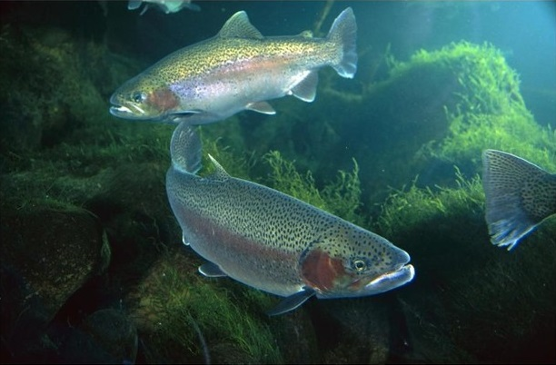

Utah is a great place to fish. It homes many fish species, and it has a lot of great locations to fish.
Rainbow Trout, one of the many common fish species in Utah.
Here is a list of some of the native fish species in Utah. For more details on these or all other Utah fish species click here.
| Name | Location | Common Fish Species |
|---|---|---|
| Pineview Reservoir | Ogden | Tiger Muskie Smallmouth Bass Crappie Perch Bullhead Catfish Rainbow Trout Brown Trout |
| Logan River | Logan | Brown Trout Rainbow Trout Cuttrhroat Trout |
| Provo River | Provo | Brown Trout Rainbow Trout |
| Strawberry Reservoir | Unita National Forest | Rainbow Trout Cuttthroat Trout Kokanee Salmon |
| Green River | Flaming Gorge Dam | Brown Trout Rainbow Trout Cutthroat Trout |
| Fish Lake | South-central Utah | Raindow Trout Splake Rainbow Trout Yellow Perch |
Green River, one of many great Utah fishing locations.
If your interested in fishing in Utah, please visit The Utah Divison of Wildlife Resources for more information, and purchasing a fishing license.